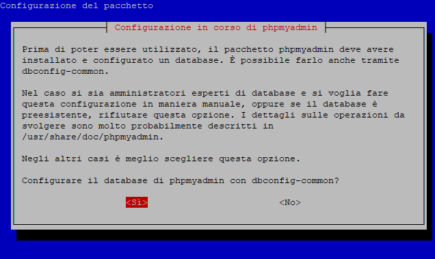
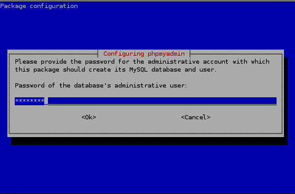

Come installare phpmyadmin su Raspberry pi per poter gestire mysql facilmente attraverso l’interfaccia grafica.
Phpmyadmin è molto utile perchè permette di gestire i database mysql con interfaccia grafica, molto più pratico rispetto al gestirlo con il terminale.
Per installarlo, digitiamo da terminale i seguenti comandi:sudo apt-get updatesudo apt-get install phpmyadmin
Durante l’installazione verrà richiesto:
Server web da configurare, premiamo invio su apache2.
dbconfig-common, premiamo invio su <Sì>.
Come ultima cosa, scegliamo una password per l’accesso a phpmyadmin.
Installazione completata!
Collegamento ad apache
Una volta installato phpmyadmin, dobbiamo collegarlo ad apache per far si di potervi accedere via web.
Entriamo quindi nel file di configurazione di apache digitando:sudo nano /etc/apache2/apache2.conf
Andiamo alla fine del file (possiamo tenere premuto ctrl+v per scorrere giù velocemente), e inseriamo questo riga:
Include /etc/phpmyadmin/apache.conf
Salviamo premendo ctrl+o, poi invio, e chiudiamo con ctrl+x
Quindi riavviamo apache per completare il collegamento:sudo service apache2 restart
Configurazione completata!
Possiamo ora accedere a phpmyadmin accedendo via web all’indirizzo del raspberry aggiungendo /phpmyadmin dopo il suo indirizzo ip.
Ad esempio: 192.168.1.60/phpmyadmin
Ora possiamo accedere con un utente e password di mysql.
Accesso negato per utente root
Mysql di default usa l’autenticazione di sistema per l’accesso a mysql, quindi phpmyadmin non permetterà di accedere, possiamo risolvere questo problema digitando da terminale i seguenti comandi:sudo mysql
USE mysql
update user set plugin='mysql_native_password' where user='root';
flush privileges;
Ora possiamo accedere da phpmyadmin.
D’ora in poi per accedere a mysql da terminale bisognerà utilizzare il comando: sudo mysql -p
Inserendo la password di mysql quando richiesta.